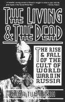

|  |
Нина Тумаркин ``ЖИЗНЬ И СМЕРТЬ: 1994 г. |
Глава II ДОЛИНА СМЕРТИ
Была на мне рука Господа, и Господь вывел меня духом, и поставил меня
среди поля, и оно было полно костей, -
И обвел меня кругом около них, и вот весьма много их на поверхности поля,
и вот они весьма сухи.
И сказал мне: сын человеческий! оживут ли кости сии? я сказал: Господи
Боже! Ты знаешь это.
И сказал мне: изреки пророчества на кости сии и скажи им: ``кости сухие!
слушайте слово Господне!''
Так говорит Господь Бог костям сим: вот, Я введу дух в вас, и оживете.
И я изрек пророчество, как Он повелел мне, и вошел в них дух, - и они ожили, и стали на ноги свои - весьма, весьма великое полчище.
И сказал Он мне: сын человеческий! кости сии - весь дом Израилев.
- Книга пророка Иезекииля 37:1--5,10,11
``Бедный Йорик,'' - пробормотал Серега Шполянский со сдержанной улыбкой, когда я осторожно подняла человеческий череп из песчаной почвы. У высокого и стройного двадцатиоднолетнего Сереги было пышущее здоровьем загорелое лицо и густая копна колючих черных волос.
``По крайней мере, Гамлет знал личность Йорика, - ответила я, вычищая большим пальцем налипшую глину из правой глазницы черепа, - но никто никогда не узнает имя этого бедного человека.''
Мы с Серегой работали в траншее всего в нескольких сотнях метров от реки Волги вблизи древнего города Ржева на северо-западе от Москвы, который был разрушен во время второй мировой войны. Вооруженный трехфутовым (около 1 м - Л.П.) металлическим щупом и тяжелой лопатой, Серега Шполянский был комиссаром моего отряда, которому было поручено найти и откопать останки солдат, чьи тела были поспешно брошены в гуще боев в траншеях вокруг Ржева. Тем утром наш отряд был послан Олегом Лишиным, основателем и руководителем ``Дозора'' - одного из многих сотен отрядов, занимающихся поиском и захоронением нескольких миллионов до сих пор незахороненных солдат, погибших во время Великой Отечественной войны.
Впервые я услышала об убитых и незахороненных солдатах в 1987 году от Августа Мишина, огромного, носящего очки профессора права с крупными резкими чертами и вьющейся бородой зеленовато-желтого цвета. В войну Мишин потерял руку. ``Прямое попадание немецкой пули в битве под Москвой,'' - сказал он. В конце долгого вечера разговоров о войне, когда он уже собирался уходить и пустой рукав его пальто заметно свисал с плеча, он заметил: ``В лесах под Смоленском вы можете увидеть скелеты солдат. Они умерли и остались прямо там. Сначала было слишком опасно искать их, поскольку все было заминировано, а потом про них просто забыли. Вы можете поехать и сами увидеть.'' Начав говорить на эту тему, Мишин не хотел останавливаться. ``Я помню, что огонь был тогда настолько плотным, что трупы просто падали повсюду и мы сталкивали их в ямы, немцев и русских вместе. Никто не тратил время на то, чтобы их сортировать; они превращались в одну большую воняющую массу.''
ДЕТИ АНТИГОНЫ
После трагической смерти Эдипа, правителя Фив, его дочь Антигона пожертвовала собственной жизнью, пытаясь похоронить тело своего брата Полиника, который был убит родным братом в борьбе за власть в Фивах и оставлен им гнить на поле битвы. Часть молодых людей ``Дозора'' и других таких же отрядов, занимающихся захоронением их братьев по духу, убитых полвека назад, проявляют антигоновское решительное чувство долга по отношению к смерти.
``А.В. Суворов говорил, что война не закончена до тех пор, пока не захоронен последний убитый солдат,'' - ответила мне Ада Лишина на мой вопрос, как она пришла к тому, чтобы сделать ``Дозор'' своей жизнью. Если бы она и ее муж Олег, оба заядлые туристы и путешественники, родились бы в Соединенных Штатах, то их бы тянуло бы в Болджер, Сиэтл или другую подобную мекку для путешественников.
Но Москва была их домом, и вполне естественно Олег Лишин стал работать военным руководителем школы, которая возложила на него ответственность за военные игры, ночные марши и запас из двадцати учебных винтовок. Он даже сформировал ``шпионский клуб'', в котором подростки совершали ночные выходы на лыжах со своими винтовками, стреляя в лунных призрачных врагов. В противоположность большинству инструкторов ``военно-патриотического воспитания'', подчеркивавшим соревновательный аспект сражений, Лишин считал своей основной задачей ``свести ребят вместе, научить их, как организовать себя, как упорно добиваться достижения общей цели.'' В шестидесятых Олег и Ада начали организовывать экспедиции по поиску павших на войне, а с конца 80-тых уже их выросшие дети и старшие внуки, которые присоединялись к отряду в возрасте восьми лет, сопровождали их в регулярных экспедициях ``Дозора.'' (см. О.В. Лишин и А.К. Лишина. Это нужно живым. Москва, 1990, стр.32.)
Сотни поисковых отрядов создали движение по поиску без вести пропавших. Отряды сильно отличаются по размеру, составу, принципам организации и мотивам деятельности. Некоторые из них состоят в основном из взрослых; другие, как ``Дозор'', главным образом направлены на подростков. Основной мотив участия в этой работе также варьируется от простой любви к оружию и острым ощущениям до ощутимой духовной сопричастности к священному делу.
Лишины характеризуют себя как педагогов и свою работу как вид воспитания молодых людей. ``Наиболее важная вещь, которую должны понять ребята, - что эти кости были людьми, реальными людьми с надеждами, желаниями, любовью и жизнью'', - объяснял Олег. ``Только когда мы полностью уважаем смерть, тогда мы действительно можем уважать жизнь.''
Многие годы после войны Советская Армия не пыталась решить вопрос о захоронении всех убитых на войне. Часто эта работа была опасной, поскольку поля боев были заминированы. Кроме того, если бы армия хоронила погибших на военных кладбищах, то содержание этих могил было бы под ответственностью армии. В 1946 году сверху была спущена директива привести все территории, бывшие местами боев, ``в порядок''. Но нищие сельсоветы были обязаны платить за эту работу из своего кармана. Режим Сталина и его преемников отвернулся от своего последнего - и самого главного - долга перед своими павшими солдатами.
В 1960-х комсомол включился в работу ``красных следопытов'', которые призывали школьников в поездки по поиску останков солдат и реликвий времен войны, что являлось частью их военно-патриотического воспитания. Но власти стремились приуменьшить официально признанное число безвозвратных потерь; признание огромного числа незахороненных погибших солдат резко противоречило бы центральному утверждению культа Великой Отечественной войны: ``никто не забыт, ничто не забыто.'' Более того, семьи тех, кого признали ``без вести пропавшим'', не имели права получать пенсии за погибших. Напротив, эти семьи часто подвергались остракизму, поскольку они любили людей, которые - кто знает? - возможно позволили взять себя в плен, что в сталинские времена было равносильно измене. Было легче и дешевле оставить леса, холмы, скалистые уступы и скалы на севере и западе России, в Карелии, Крыму, Смоленской и других областях с разбросанными на них обломками человеческой жизни и смерти.
Как и множество других запретных тем, проблема незахороненных погибших стала предметом публичного обсуждения во времена Горбачева. В статье ``Никто не забыт?'' в популярном иллюстрированном журнале ``Огонек'' говорилось о том, что число незахороненных солдат равно по крайней мере двум миллионам, почти все из них все еще числятся ``пропавшими без вести.'' Телевизионные документальные фильмы оплакивали ужасную судьбу забытых жертв войны. И в 1988-89 в муках перестройки преобразованный комсомол помог организовать Ассоциацию Поисковых отрядов. Ассоциация координировала деятельность от десяти до двадцати тысяч поисковиков (число участников движения более чем удваивается в летние месяцы), входящих в несколько сот отрядов с такими именами, как Поиск, Искатели, Долина и - Дозор.
В тот же год Советская Армия начала изредка помогать: не деньгами, а в доставке добровольцев на места старых боев, в обеспечении гробов для захоронений, бензина, которые либо бесплатно доставляли, либо продавали по низким ценам, и, что самое главное, - давали опытных саперов для обезвреживания мин.
Армия имела веские причины, чтобы быть настороже по отношению к добровольным поисковым организациям. Иногда их экспедиции открывали больше правды о войне, чем власти были готовы придать огласке. Например, когда в 1989 году отделение Дозора раскопало недалеко от Новгорода место военного госпиталя и нашло останки многих больных и раненных пациентов рядом с обломками госпитального имущества, дозоровцы обнаружили, что каждый череп имеет пулевое отверстие. Обнаруженные там пули были советскими, и кроме того, было множество других доказательств того, что пациенты были расстреляны ДО того, как немцы достигли тех мест. Это пример того, что означала сталинская ``тактика выжженной земли'': убивать своих собственных людей прежде, чем враг сможет использовать их.
В 1991 году Ассоциация поисковых отрядов нашла и захоронила останки 18349 солдат. У большинства из них невозможно установить имена. Никто не может сказать, сколько среди них было немцев. В 1992 г. Юлий Иконников, тогдашний глава Всесоюзного координационного совета поисковых отрядов оценил, что один миллион немецких солдат до сих пор лежит неопознанными на территории бывшего Советского Союза. Но другие считают эту цифру сильно преувеличенной, ссылаясь на склонность немецкой армии хоронить своих убитых и их более эффективную систему опознания тел убитых. Иконников встречался с представителями организаций немецких ветеранов, надеясь на помощь в поисках их пропавших солдат, но ему сказали, что они платили бы за содержание немецких могил на территории бывшего Советского Союза, а поиск считают слишком рискованным и дорогим.
На деле же, когда в феврале 1993 года приблизилось пятидесятилетие Сталинградской битвы, правительствами как Германии, так и Австрии обсуждался вопрос, что им делать в отношении их погибших солдат, чьи останки до сих пор разбросаны под тонким слоем земли на полях и в лесах вокруг того опустошенного города, который 1956 году был переименован в Волгоград. Поехать туда и вывезти их? Похоронить там? Построить мемориал в их честь? Забыть о них?
МОГУТ ЛИ ЭТИ КОСТИ ЖИТЬ?
Ужасно жаркой августовской ночью 1992 года мы ввосьмером сели в Москве в поезд, направляющийся в город Ржев, место действия затяжных жестоких боев во время войны. Угнетенная душной жарой и взволнованная предстоящей поездкой, я совсем не могла уснуть во время нашей пятичасовой езды в поезде. ``У меня прежде всего личные цели, - написала я в своем дневнике в самолете в Москву несколькими днями раньше. - Маша больна, очень больна. Ее доктор сказал мне, что ``мы можем потерять ее в любую минуту.'' Моя бедная, дорогая милая сестра. Впервые я приехала в Россию в 1978 году ровно через месяц после похорон Георгия. Я продолжала ходить на кладбище и плакала. Сейчас Маша так же близка к смерти, как и весь год. А я еду увидеть кости.''
``Я стремлюсь встретить лицом к лицу смерть и осадить ее. Отодвинуть мои собственные тщеславие и жадность в перспективу, чтобы увидеть, как мы все оканчиваем свой путь. Я надеюсь на красоту лесов, приключение и товарищество. Я надеюсь, что это будет близко к тому, как если бы я действительно была на войне.''
Отряд молодых людей, ехавших со мной, состоял из дочери Олега Лишина Татьяны, тонкой, почти хрупкой, но с уверенными жесткими манерами и ее двух детей, жилистого десятилетнего мальчика и шестилетней девочки с соломенными белокурыми волосами, которая надувала и отпускала голубой шар, позволяя ему свистеть по купе поезда. Мы прибыли во Ржев около трех часов утра, после некоторого скитания по округе забрались в автобус, ехали еще полчаса и потом высадились. Автобус ушел, оставив нас на краю грязной грунтовой дороги в полной темноте. Чернеющие деревья таинственно зашелестели, когда мы вошли в лес.
Мы пришли в лагерь вскоре после рассвета. Все, в основном, еще спали, но Олег и Ада Лишины приветствовали нас с горячим чаем, который мы с благодарностью выпили с черным хлебом. Пятнадцать палаток были установлены в высоком сосновом лесу по соседству с неработающим пионерским лагерем, который в последние годы использовался в основном в качестве очень простого жилья для туристов.
Прежде всего я захотела увидеть солдат, про которых читала так много лет. Две дюжины дозоровцев уже провели здесь десять дней и за девять из них нашли останки пятидесяти трех солдат. Как раз накануне нашего приезда они откопали еще двадцать шесть.
Солдаты из Великой Отечественной ждали меня на поляне на краю лагеря. Некоторые лежали в больших полупрозрачных пластиковых мешках, ожидая очистки и разбора. Другие, вымытые, но еще не разложенные, лежали в грудах на большом куске полиэтилена. На другом листе полиэтилена лежали человеческие кости, разложенные в анатомическом порядке. Солнечный свет бросал сквозь листья пятнистые тени на черепа, расположенные на краю тента. Странно, но хотя не было в них ни разума, ни глаз, ни уст, отражающих личность, они, несомненно, выделялись среди других костей - бедренных, тазовых, перемешанных ребер и остальных, - покоящихся под ранним солнечным светом. Я мельком взглянула на груду копчиков. Какая разница сейчас в том, что они были при жизни рудиментарными органами.
Олег взял один череп. ``Можно сказать, что он был очень молодым, - сказал он. - Посмотрите на эти ровные белые зубы. А все дырки, которые вы видите - от зубов, выпавших после его смерти.''
Мои товарищи по лагерю поставили для меня палатку - очень маленькую одноместную конструкцию из старомодного брезента. ``Она называется ``робинзон,'' - сказали они с ударением на последнем слоге, - как Робинзон Крузо. '' Я натянула резиновые сапоги, купленные в сельском магазине в Вермонте, и непромокаемые штаны, поверх которых я повесила кожаный ремень с выданным мне снаряжением: большим ножом и саперной лопатой. Небольшой группой мы ушли в лес вслед за Серегой Шполянским. Его щуп в опытных руках издает характерный звук при прикосновении к человеческой кости.
С нами был Володя Демидов - видный гигант примерно тридцати лет. Он работал администратором в Ассоциации поисковых отрядов и обладал жутким сходством с Солдатом-освободителем, памятником советским войскам, погибшим при штурме Берлина, установленным в 1946 году и десятилетиями служившим главным символом культа Великой Отечественной войны. Демидов пришел в поисковое движение через комсомол, пославший его приглядывать за поисковой деятельностью; со временем он отошел от комсомола.
Мы вышли через лес на открытую поляну, по краям которой большими прямоугольниками росли красивые растения, называемые иван-чаем: высокие стебли, украшенные розовыми цветами. ``До войны здесь была деревня Ножкино, - объяснил один из моих спутников. - А сейчас иван-чай вырос на тех местах, где когда-то стояли дома.'' Дома и солдаты исчезли внезапно или постепенно, а цветы все растут и растут.
Мы опять направились через лес и вышли на берег величественно скользящей под солнцем Волги. Мы повернули направо и пошли вслед за ведущим нас Шполянским, несущим на плече щуп и лопату, слева от нас текла река, а справа был самый замечательный березовый лес, который я когда-либо видела.
Пятьдесят лет назад место этого великолепного леса было полем боя, усеянным телами. Ржев, расположенный на северо-западе от Москвы, был местом одного из самых ужасающих сражений войны. Бои бушевали здесь без передышки почти два года, начавшись в 1941 году, продолжившись Московским контрнаступлением в начале 1942 года и закончились Сталинградской битвой, во время которой Сталин приказывал наступать подо Ржевом, как и в других местах, чтобы оттягивать немецкие силы с главных стратегических направлений. Некоторые населенные пункты переходили из рук в руки по многу раз. Здесь погиб по меньшей мере один миллион человек, и только немногие были взяты в плен. Согласно официальному советскому отчету, к весне 1943 года из 5443 ржевских домов остались только 495.
Серега Шполянский привел нас по лесу к частично раскопанной военной траншее. Теплый свежий воздух дрожал от жужжания насекомых. Спокойная красота этих мест не увязывалась с их жестокой историей. Я быстро поняла, что нож, который я получила вместе с саперной лопатой, предназначен для очистки всего, что мы откопаем. Нашей задачей было найти останки и личные вещи солдат и внимательно их изучить, чтобы по возможности определить, как погиб каждый. Дырка в черепе или грудине говорили сами за себя. В идеале хотелось установить имя каждого солдата, но мы знали, что вероятность этого мала.
Во время войны каждый советский солдат получил смертный медальон - граненную деревянную (в действительности эбонитовую - Л.П.) капсулу с откручивающейся крышкой, - в котором содержался туго скрученный листок бумаги, на котором были написаны его личные данные. Вероятно, армия должна была дать этим капсулам другое более безобидное название, например ``dog tag'' (``собачья бирка'' - так называются такие идентификационные медальоны в американской армии - Л.П.), так как солдаты верили, что смертные медальоны навлекают беду, и часто выбрасывали их перед тем, как идти в бой.
В то первое утро я сидела на краю траншеи и вместе с двенадцатилетним мальчишкой, чье противоречивое отношение ко всякой работе (а также неукротимый аппетит - Л.П.) дало ему прозвище Хоббит, и с помощью ножа счищала землю с каждой кости перед тем, как осторожно положить ее в мешок. После пятидесяти лет в почве кости стали темными как дерево. Я не удивилась бы тому, что кости моего отца через сорок и моего брата через пятнадцать лет после их смерти тоже стали темными. Я хотела бы видеть их, дотронуться до них, говорить с ними.
Когда я очищала кости от налипших кусочков земли, приходило удовлетворение от того, что я что-то делаю для мертвых тогда, когда, казалось бы, это уже невозможно. ``Мне хочется погладить каждый череп,'' - признался Серега, когда я очищала череп. Хотелось бы знать, о чем думал этот солдат в последний миг. Это было ощущение одновременного перемещения во времени вперед и назад: назад в войну и вперед за свою смерть или, так сказать, за ее первые стадии. Очистка костей - это выражение одновременно бережного отношения и уважения, подобно тому, как Христос омывал ноги апостолам.
Была ли я подавлена тем, что Толстой назвал ``обратной стороной смерти''? Я чувствовала себя защищенной и в безопасности; было легко отдавать должное тем, кто не может причинить мне вреда. Бережное отношение к костям и черепам было единственным, хоть и непривычным способом приблизиться к этим людям. Кажется, будь я на их месте, мне было бы приятно знать, что через пятьдесят лет после моей смерти любящие уважительные руки поднимут мои останки, бережно обмоют и похоронят их, предпочтительно с молитвой.
Мы вернулись в лагерь во время запоздалого завтрака из подгоревшей овсянки, приготовленной в большом железном котелке, подвешенном над костром. Напитком была чага - дымящееся горькое варево из похожего на губку коричневого гриба, растущего на березах в тех краях. Каждый получил еще по два ломтика хлеба и два кубика маргарина, которые юный Шурка Рохлин, нескладный рыжий пятнадцатилетний мальчик, осторожно нарезал своими грязными руками на аккуратные симметричные кусочки. Их вид и расположение невольно напомнили мне о черепах и костях, лежащих в строгом порядке на другом конце лагеря.
На следующий день моя бригада вернулась на ту же просеку в лесу, и я чувствовала себя готовой начать раскопки самостоятельно. Я прыгнула в траншею и принялась за работу. На моих руках были те желтые резиновые перчатки, которые поколения американских женщин используют для защиты рук при мытье посуды. Серега начал откапывать череп, а я очень аккуратно и осторожно закончила эту работу - ведь некогда сильный солдат стал таким хрупким. Мы извлекали из земли руки, ребра, патронташ, гильзы, осколки. Вспоминались слова из моих школьных дней: большеберцовая кость (tibia), малоберцовая кость (fibula), лучевая кость (radius), локтевая кость (ulna); они звучали как имена римских детей. Работа была тяжелой, грязной и жаркой. Болела спина, мне постоянно хотелось есть. Ночью я спала так крепко, что меня нужно было трясти, чтобы разбудить в 6:45 утра, когда была пора пить чай, есть что-то типа овсяной каши и идти на работу.
ДОЗОР
``После того, как ребята приносят мешки с костями в лагерь, - сказала мне Ада Лишина - они в знак уважения моют каждую косточку. Потом кости и находки разбираются, немедленно удаляется все, что может взорваться. Все находки тщательно осматриваются: нельзя ли по ним определить имя их прежнего хозяина. В конце экспедиции если у нас есть гробы, мы кладем в каждый останки девяти солдат и проводим захоронение, на которое зовем местных жителей. Мы читаем стихи, поем военные песни и в последние несколько лет мы приглашаем священника, который принимает участие в захоронении. Если же гробов нет, то мы роем большую могилу, обкладываем ее лапником, кладем найденные останки на лапник и проводим свое захоронение.'' По русскому обычаю вечнозеленые ветки символизируют вечную жизнь.
Раскопки, которые продолжаются с мая по октябрь составляют только часть работы Дозора. В течение оставшегося года его члены исследуют войну в библиотеках и архивах, пытаясь собрать данные о военных действиях на территории, где они планируют проводить раскопки. Также они ездят в места будущих работ и расспрашивают местных жителей, которые детьми жили в этих местах во время войны и могут поделиться воспоминаниями и помочь найти места, где лежат тела погибших.
В воскресенье вечером после наших раскопок Лена Петрова, двадцатиоднолетняя студентка исторического факультета МГУ (а на самом деле физического! - Л.П.), которая провела несколько месяцев, изучая бои подо Ржевом, на общем сборе отряда прочитала лекцию. Мы все сидели на бревнах, в то время как Лена, вооружившись картой и указкой, рассказывала о результатах ее работы по архивам 29 и 30 армий.
Немцы впервые заняли Ржев в октябре 1941, представляя его себе как трамплин для атаки на Москву. В январе 1942 после битвы под Москвой cоветские войска отбросили их обратно ко Ржеву, но к концу месяца немцы опять контролировали деревни вокруг Ржева, и еще более года боев прошло прежде, чем советские войска вырвались из ``мешка'' или окружения. В течение лениного рассказа опять и опять становилось очевидным, как мало высшее командование Советской Армии думало о жизнях своих солдат и мирных граждан. Невыполнимые приказы атаковать следовали один за другим в то время, как войска с трудом были способны отступать в организованном порядке, и кроме того, у них не было куда идти - только умереть. Их останки мы находим 50 лет спустя.
Михаил Гефтер, маленький, умудренный пожилой историк, ставший диссидентом, который более 12 лет был моим неофициальным академическим руководителем, воевал и был ранен в тех местах в первой половине войны. Когда позже я рассказала ему о работе Дозора на ржевской земле, он сказал: ``Без преувеличения, в тех местах должно быть около миллиона погибших.'' Я спросила у него, почему большинство из них осталось непохороненными. ``Как у нас могло быть время для захоронения наших убитых, - ответил он с обиженной усмешкой, - если в каждый момент, когда мы не были непосредственно под огнем, мы слышали приказы наступать, наступать, наступать!''
После лекции Лены Володя Демидов, который представлял Ассоциацию поисковых отрядов, рассказал о событиях, которые произошли ранее в том же 1992 году. ``Это был трагический год для нашего движения, - начал он. Его круглое лицо со славянскими скулами выглядело усталым и осунувшимся. - В апреле восемнадцатилетний парень был убит и несколько других ранены, когда группа ребят в экспедиции под Вязьмой (недалеко ото Ржева) подожгла связки найденных гранат. При схожих обстоятельствах в июне погиб еще один молодой человек и несколько были тяжело ранены в июле. В добавок, два подростка подорвались на мине.'' Речь Демидова предназначалась не только для информации, но и для инструктирования, он напомнил отряду о необходимости соблюдать правила личной безопасности. В Дозоре никто не позволял себе утаить откопанную находку. Все - в том числе и боеприпасы - передавалось одному из четырех отрядных комиссаров, которым исполнилось по крайней мере двадцать лет.
Поздние вечера в лагере посвящались музыке и сидению вокруг костра на больших бревнах. Всегда была хотя бы одна гитара и много поющих. Пели военные песни, песни о поиске и другие любимые песни. Поисковая песня Дозора, которая исполнялась по крайней мере раз за вечер, была написана одним из его членов, Владимиром Ерховым - поисковиком, композитором и режиссером из Казани. (В. Ерхов никогда не был дозоровцем. Он из казанского отряда ``Снежный десант''. А его песню мы действительно считаем и своей тоже. - Л.П.) Она называется ``Долина смерти''.
Залит до бруствера окопчик
Грунтовой черною водой.
Вот здесь залег навеки хлопчик
В обнимку со своей бедой.
И россыпь ржавых гильз у каски,
Пробитой в двух местах осколком,
Мы принимаем как подсказку
Войны, бродившей по проселкам.
Долина смерти, долина боли,
Долина скорби, долина горя,
Долина без вести пропавших,
Долина павших, долина павших.
Горит костер на поле боя.
Зажжен он внуками солдат.
Но и его тепло живое
Не обогреет тех ребят,
Что здесь погибли и пропали,
Отдали жизнь, как ношу с плеч.
Ах, правда, память, правда, память,
Как нелегко тебя сберечь.
Однажды и я взяла гитару. Хотя я люблю петь русские песни, но подумала, что нужно что-то американское, и меня потянуло на блюз:
Черная дева, черная дева,
Не лги мне,
Скажи мне, где ты спала прошлой ночью?
Среди сосен, среди сосен,
Где солнце никогда не сияет,
Где я дрожала всю ночь напролет.
Несколько дней я работала с дозоровцами как на раскопках, так и в лагере; мы ходили, говорили и пели вместе. Меня сильно впечатлила их работоспособность, их доброжелательность по отношению друг к другу (с некоторыми исключениями, конечно) и, больше всего, их желание найти и достойно похоронить своих соотечественников. Я полагаю, что общее понимание благородности их дела служит главным источником успеха Дозора как на общем, так и на личном уровнях.
``А если это останки немцев?'' - спросила я однажды Серегу Шполянского.
``Скорее всего это наши, - ответил он, - поскольку немцы обычно уносили своих убитых из траншей и хоронили их. Но на самом деле это неважно. Немецкие солдаты также не должны валяться, как эти кости. Каждый цивилизованный человек заслуживает достойного погребения.''
``И то, что мы оставили здесь нашего солдата надолго, - добавил Демидов, опуская свою лопату и вытирая пот со лба, отчего его светлые растрепанные волосы слиплись, - показывает, что мы не цивилизованная страна.'' Утверждение, что Россия является нецивилизованной или ненормальной, было общим в те постперестроечные дни. Для большинства цивилизованная жизнь означала скромное жилье с водопроводом, доступность основных продуктов питания, и, вероятно, наиболее важное - административную систему, которая уважительно относилась бы к людям.
Когда я спрашивала пятнадцати-, шестнадцати-, восемнадцатилетних дозоровцев о том, почему они посвящают свое время (и часто свои собственные деньги) поиску без вести пропавших, их ответы не были особенно красноречивы, а наоборот, граничили с однообразием. ``Дело должно быть сделано.'' ``Потому, что это нужно, вот и все.''
Я полагаю, что сила движения идет из одного изначального непосредственного человеческого качества. В противовес оказанию почестей военным мемориалам, не говоря уж об изобретании ``патриотической'' деятельности, копание костей является простым и непосредственным. В самом деле, я подозреваю, что в каких-то потаенных уголках нашего мозга сидит потребность рыть землю в поиске костей своих предков. И все мы, вероятно, выиграли бы от предприятия прямых физических действий, которые сначала могли бы показаться устрашающими, но смогли бы успокоить беспокойных духов прошлого, которые мучают нас, если мы позволяем себе слышать их шаги.
ЮНЫЕ ИКОНОКЛАСТЫ
(иконокласт - ист. иконоборец, человек, борющийся с традиционными верованиями, предрассудками )
Одной субботней летней ночью 1986 года в полярной районе Советской России шестерым молодым людям на мотоциклах, едущим на рыбалку, случилось проезжать мимо ``Долины Славы'', где покоятся останки тысяч советских воинов, погибших при трехлетней защите Мурманска. Во время войны это место называли ``Долиной Смерти'', а спустя 40 лет цветы окружили пьедестал обелиска, и место превратили в скромный военный мемориал. Молодые люди опустошили ящик пива, один из них достал ружье, и из спортивного интереса они начали по очереди стрелять по пустым пивным бутылкам, которые они выстроили вдоль пьедестала. Потом, очевидно, эти нехитрые цели им надоели, и они открыли огонь по самому монументу. Они взяли на мушку дату ``1941'' и слова ``РОДИНА ПОМНИТ СВОИХ СЫНОВЕЙ.'' Веселье со стрельбой продолжалось почти три часа.
Периодический молодежный журнал ``Юность'' поместил статью о
происшедшем, содержащую короткое интервью с Андреем Куликовым, первым открывшем
огонь:
``- Андрей, трудно убить человека?
- Конечно, трудно.
- А можно убить память?
- Какую память?
- Человеческую память.
Куликов молчит.''
Когда Андрей Куликов и его приятели совершали свой пьяный расстрел в Долине Славы, они, наверное, не собирались убивать память. В лучшем случае, выбор цели их ``тренировки'' был совершенно случайным, в худшем - они совершили акт иконоклазма, кощунства - осквернили священное место гражданской религии. На самом деле, если кто и пытался убить настоящую людскую память о Великой Отечественной войне, то это не вандалы, а скорее те, кто трудились над превращением Долины Смерти в придуманную ``Долину Славы'' со стандартными обелисками и ритуальными лозунгами. Вероятно, эти парни стреляли на мурманском военном мемориале в знак протеста против тех лет, когда они против своей воли участвовали в церемониях, стояли в почетных караулах, поздравляли ветеранов, возлагали гирлянды, все по указке.
Нечто похожее на мурманское дело произошло в Павловске под Ленинградом в 1985 году. Ленинградская учительница привезла своих самых лучших учеников в Павловск, который славится своим великолепным, красиво восстановленным дворцом конца восемнадцатого века. По дороге они неожиданно вышли на братскую могилу погибших в Великой Отечественной войне. Учительница была в шоке, увидев, как дети спонтанно разыграли пародию на возложение венков. ``Они бегали вокруг и смеялись, кто-то бросал охапки грязных листьев на могилу, а остальные, сгибаясь от смеха, разделились на тех, кто делал вид, что плачет, и тех, кто пел похоронные мелодии. ``Ребята! Снимите шляпы!'' закричала девочка-отличница с бантиками в волосах ...''
Когда учительница начала говорить детям ``о тех, кто погиб, о долге, о памяти - о всем соответствующем'', она увидела, что они поняли только одно - они не должны больше так делать в ее присутствии.
На следующий день учительница рассказала о происшедшем предыдущей классной руководительнице этих ребят. ``Она приняла это за упрек ее патриотической работе с ними и начала горячо перечислять, что она с ними проводила.'' Она водила их на Пискаревское кладбище, на Марсово поле, возлагала с ними венки, играла в военные игры, встречалась с ветеранами.
``Теперь я поняла, - продолжала автор, - почему дети совершили это кощунство. Это была бессознательная реакция на принудительное участие в непонятных ритуалах. Как вы думаете, что происходило в их душах тогда? Во время нескончаемых одноликих показательных ``патриотических'' игр, соревнований по сочинению патриотических стихов, песен, плакатов...?'' ``Детям, - объясняла она, - необходимы настоящие опасности и трудности.'' Эта ленинградская учительница повторила свою историю в опустошающем фильме 1987 года ``Так мы живем'' об отчуждении и моральной развращенности советской молодежи. Она встряхнула головой и печально улыбнулась, вспомнив об ученике, который принес сочинение и поинтересовался, не должен ли он ``добавить побольше патриотизма?''
СВЯЗИ
Однажды в начале 1980-х я была свидетелем последней части семинара людей, ходящих по углям. Сотни людей потратили по две тысячи долларов, чтобы научиться представлять и отчетливо произносить свой страх ходить по горячим углям, приобрести мужество (и технику, включая мантры, которые нужно кричать) совершить то, чего они боялись, и в итоге гулять по слою горячих углей, вопя ``Прохладный Мох! Прохладный Мох!''
Цель вложения денег, очевидно, состояла в приобретении уверенности делать то, что кажется пугающим и трудным, путем выполнения чего-то очень пугающего и очень трудного. Как оказалось, люди шли быстро, угли не были такими уж горячими, хотя выглядели угрожающе оранжевыми, и все мероприятие, происходившее сначала в конференц-зале, а затем на автомобильной стоянке отеля Шератон в пригороде Бостона, было чем-то вроде обмана. По окончании испытания люди покупали футболки ``ХОДОК ПО ОГНЮ'', чтобы вдохновлять себя и рекламировать свое испытанное бесстрашие.
Подобно ходокам по огню, каждый дозоровец должен был встать лицом к лицу и преодолеть свой первоначальный страх, в данном случае перед эксгумацией и взятием в руки человеческих останков, и поэтому каждый из них стал сильнее, как, полагаю, стала и я. Но причина этого далеко выходит за пределы простой потребности делать что-то пугающее ради себя. Чувство долга и связи с истиной, историей и достоинством каждого человека - они вдохновляли многие годы работы добровольцев, которые пытались и пытаются делать простое дело по исправлению несправедливостей прошлого.
Подростки в Дозоре пытаются разными путями отождествлять себя с мальчишками и мужчинами, чьи останки они вырывают из плотной земли. В мой последний вечер с ними было холодно и дождливо. Сидя в свитерах и куртках около костра, мы наблюдали и участвовали в потрясающем театрализованном представлении. Олег Лишин ввел нас в суть, предложив представить себя ровно пятьдесят лет назад, в августе 1942 года. Он сказал, что к нам придет молодой солдат из того времени поделиться своей судьбой и своими стремлениями. Мы должны были слушать его и задавать вопросы. Олег отошел и мы остались около мерцающего в темноте костра под небольшим дождиком.
Статный, с тонкими чертами семнадцатилетний дозоровец Саша Алешин, который готовился несколько недель, вышел из тьмы к нам в полной форме бойца Красной Армии времен войны. Сначала с ним беседовала медсестра, ею была дочь Лишиных Таня, но потом она исчезла, и солдат из войны Саша остался излагать детали боев, которые он видел и в которых участвовал, и свои надежды, политические взгляды, страхи и убеждения. В возрасте, когда молодые склонны быть безнадежно самовлюбленными, Саша смог совершить духовный скачок в другую эпоху, в другую душу.
Последнее, что я сделала прежде, чем покинуть лагерь - я попрощалась с грудой костей и черепов, которые я приветствовала в мое первое утро. Только сейчас к ним добавились новые. Нам не пришлось повторять наш долгий путь, который превратился после дождя в грязную сельскую дорогу. Машина военной скорой помощи довезла нас до ржевского вокзала. В Москву мы прибыли в 5:30 утра.
После ванны и завтрака я пошла в местную церковь, сокровище восемнадцатого века. Были сразу Преображение и Яблочнай Спас, русский церковный праздник, посвященный первому урожаю яблок. Я купила две свечи горчичного цвета, они продаются в каждой русской церкви, и, подавленная запахом ладана и яблок и чудесным хоровым песнопением, подошла к иконе Богоматери и зажгла обе свечи. Потом я прочитала две молитвы: одну за мою умирающую сестру и другую за мальчишек, за сотни тысяч мальчишек, мужчин, женщин и девушек, погибших на полях боев подо Ржевом.
Антигона из Фив должна была пожертвовать своей жизнью, чтобы дух ее брата смог попасть в свой вечный дом. Но дети Антигоны, тысячи добровольцев, упорно работающих в лесах и болотах, чтобы помочь своим погибшим братьям, получили дар жизни, полной смысла, достоинства и чувства связи с прошлым и будущим, которые, возможно, приведут к мудрости.
Перевод с английского - мой, так что не судите строго.
Если вы хотите поделиться впечатлениями -
пишите.
Елена Петрова
{kind=link}
{kind=link}
{kind=link}
{kind=link}